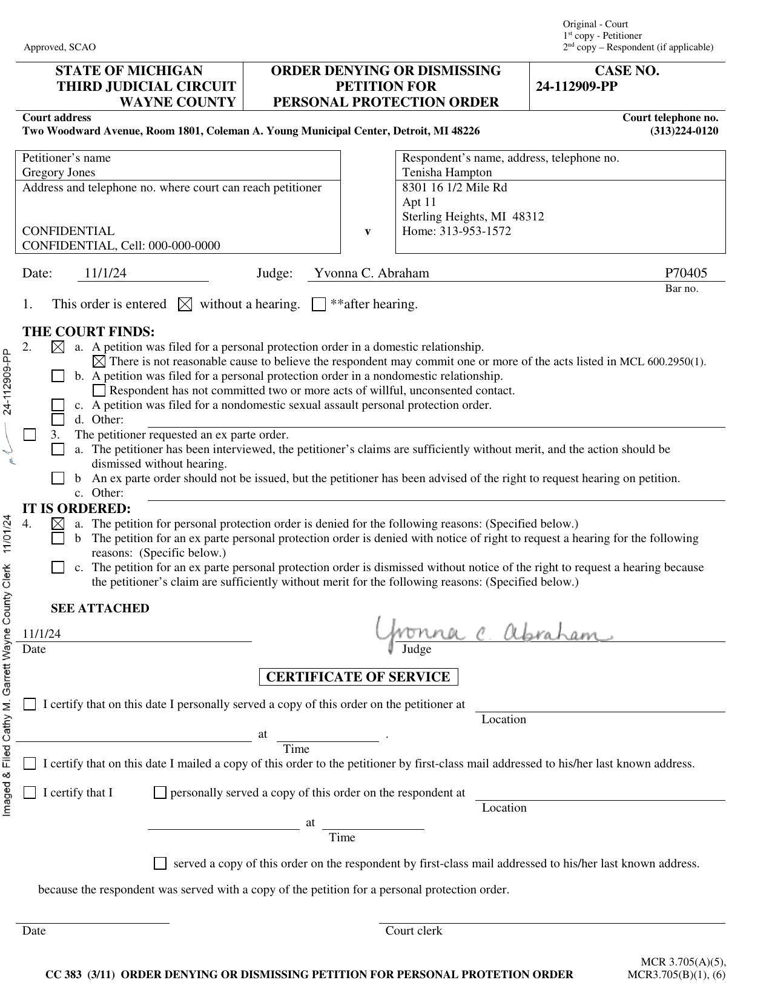
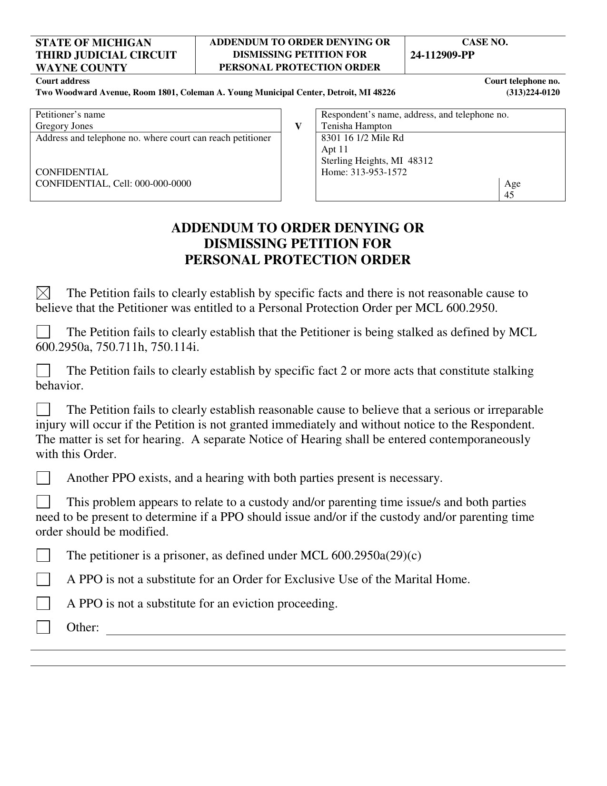
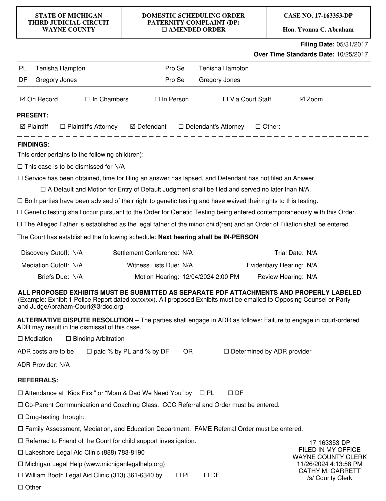
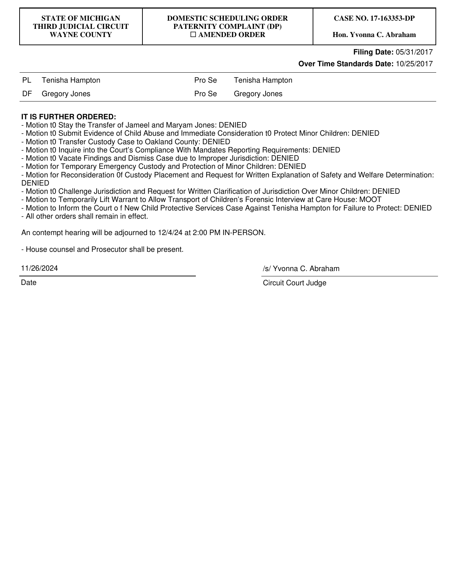
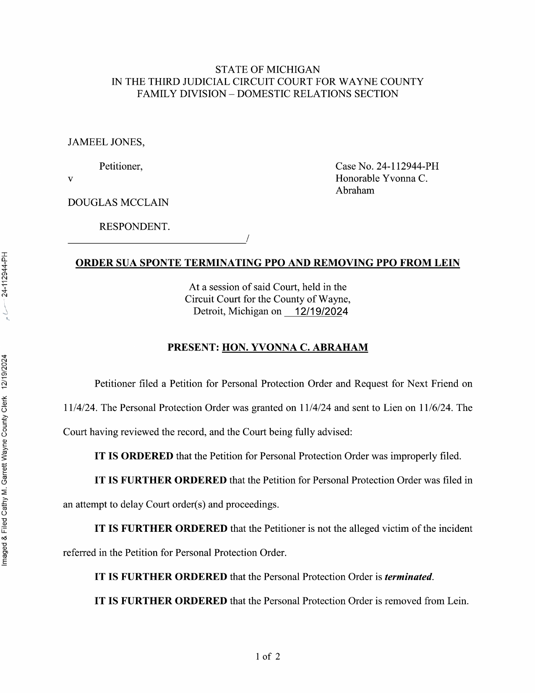
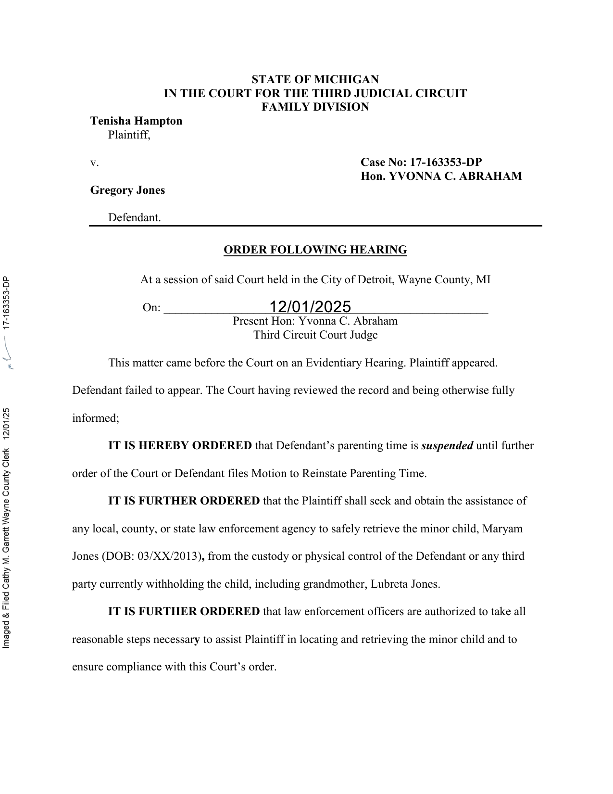
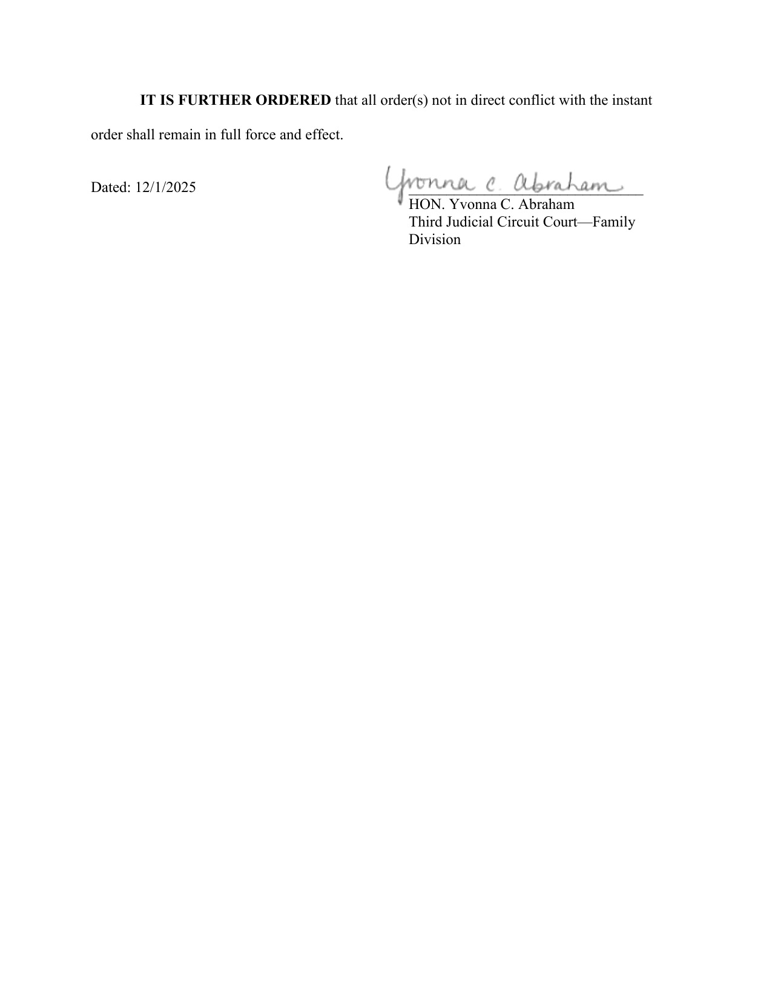

The Documents
Letters to Governor Whitmer
Sent to the office of the Governor of Michigan, who appointed Judge Abraham to the bench in 2021.
-
Letter to Governor Whitmer -- Initial Describes what has happened to my family and asks her office to look into Judge Abraham's conduct.View PDF
-
Letter to Governor Whitmer -- Follow-Up Documents how Wayne County blocked my Court of Appeals transcript, the legal basis for why the parental-rights suspension does not meet Michigan's standard, and why the pattern appears retaliatory.View PDF
Case Summary
Public version -- birthdates and one specific clinical detail have been generalized to protect the children's privacy. The complete original has been provided to the courts, CPS, and law enforcement, and is available for verification on request.
-
Summary of Federal Lawsuits Concerning Judge Yvonna Abraham The full written case summary: Judge Abraham's rulings and denied motions, every federal lawsuit naming her or arising from her actions, the December 20, 2024 raid, and the therapist documentation of suicidal risk.View PDF
Every Motion Judge Abraham Has Denied
The signed originals, as filed with Wayne County.
1. Petition for Personal Protection Order Against Tenisha Hampton -- DENIED
November 1, 2024 · Case No. 24-112909-PP


View the Signed Order (PDF)2-11. Ten Motions Denied at the November 26, 2024 Hearing
Case No. 17-163353-DP · All ten ruled on in a single order, entered as a group with no individual reasoning given for any one of them.
- 2. Motion to Stay the Transfer of Jameel and Maryam Jones -- DENIED
- 3. Motion to Submit Evidence of Child Abuse and Immediate Consideration to Protect Minor Children -- DENIED
- 4. Motion to Transfer Custody Case to Oakland County -- DENIED
- 5. Motion to Inquire into the Court's Compliance With Mandated Reporting Requirements -- DENIED
- 6. Motion to Vacate Findings and Dismiss Case Due to Improper Jurisdiction -- DENIED
- 7. Motion for Temporary Emergency Custody and Protection of Minor Children -- DENIED
- 8. Motion for Reconsideration of Custody Placement and Request for Written Explanation of Safety and Welfare Determination -- DENIED
- 9. Motion to Challenge Jurisdiction and Request for Written Clarification of Jurisdiction Over Minor Children -- DENIED
- 10. Motion to Temporarily Lift Warrant to Allow Transport of Children's Forensic Interview at Care House -- MOOT
- 11. Motion to Inform the Court of New Child Protective Services Case Against Tenisha Hampton for Failure to Protect -- DENIED


View the Signed Order (PDF)12. Personal Protection Order for Jameel Jones Against Douglas McClain -- TERMINATED
December 19, 2024 · Case No. 24-112944-PH · The day before the raid on Gregory's home.

View the Signed Order (PDF)13. Parenting Time -- SUSPENDED Indefinitely
December 1, 2025 · Case No. 17-163353-DP · Entered while Gregory was involuntarily hospitalized and unable to appear.


View the Signed Order (PDF)Court Orders and Official Correspondence
-
Order Following Hearing -- December 1, 2025 Wayne County Circuit Court, Hon. Yvonna C. Abraham. Suspends parenting time and authorizes law enforcement to retrieve Maryam Jones.View PDF
-
Court of Appeals Deficiency Letter -- December 16, 2025 Michigan Court of Appeals notice requiring the hearing transcript within 21 days.View PDF
-
Emergency Motion for Immediate Stay and Protective Relief -- December 17, 2025 Filed with the Michigan Court of Appeals two days after the December 1 order, asking the Court to stop law enforcement from seizing Maryam while she was hospitalized for suicidal ideation.View PDF
-
Court of Appeals Dismissal Order -- March 3, 2026 Dismisses the appeal for failure to cure the transcript defect.View PDF
-
Court of Appeals Superintending Control Dismissal -- March 27, 2026 Related order directing a delayed application for leave to appeal.View PDF
December 17, 2025 -- The Emergency Filing to Keep Maryam Safe
Two days after the December 1, 2025 hearing, I filed an emergency motion with the Michigan Court of Appeals asking the Court to immediately stop enforcement of that day's order. The order suspended my parenting time and authorized law enforcement to locate, seize, and transfer Maryam -- while she was enrolled in a hospital-level Partial Hospitalization Program for suicidal ideation, a fact the trial court had already been told and did not address in the order.
What I asked the Court of Appeals to do: immediately stay enforcement of the December 1 order; prohibit any law enforcement retrieval of Maryam while the appeal was pending; and preserve things as they were so she would not be forced to move while actively suicidal. I argued the trial court had abused its discretion by ignoring the mental-health evidence in front of it, that authorizing police to remove a hospitalized, suicidal child without safety findings violated due process, and that it failed to accommodate a known disability under the ADA.
This filing is the one the Court of Appeals ultimately treated as a request for superintending control -- assigned its own docket number (COA No. 379512, "In re Jones") -- and dismissed on March 27, 2026 for lack of jurisdiction, directing me to instead file a delayed application for leave to appeal under MCR 7.205. That dismissal order is posted above. I have not been able to undo the December 1 order through the Court of Appeals since.
What the Clinical Records Establish
Summarized from records by licensed clinicians and Child Protective Services. Original records available for verification on request.
October 20, 2023 -- Treating Therapist's Letter to Child Protective Services
Bilal's treating therapist, Dr. Terri Ratliff, Ph.D., LLPC, NCC of Great Lakes Psychology Group, wrote directly to the Macomb County CPS investigator handling the case, stating her professional opinion in writing: "Due to the harm experienced and described and based on the criteria by the State of Michigan, DHHS, it is my opinion that the Bilal Jones has experienced personal, nonaccidental physical and mental injury by his mother." The letter describes the trauma symptoms she observed -- hypervigilance, anxiety, catastrophic thinking, and fear for his siblings' safety -- as consistent with the choking Bilal had reported.
View the Letter (PDF)June -- September 2023 -- Clinical Intake and Therapy Record, Bilal Jones
The same therapist's fuller clinical record -- an intake assessment and course-of-treatment letter -- documents Bilal's diagnosis of unspecified anxiety disorder, "situational and associated with his mother," and records, in the clinician's own words, that he described his mother grabbing him by the throat and choking him, most memorably at age 8 or 9, until he "felt he would pass out," and that his mother "admitted she had done the choking" when confronted by his father. The letter states the clinician found him consistent and credible across multiple sessions, notes his ongoing fear for his younger siblings' safety during their mother's unsupervised time with them, and recommends supervised or virtual family therapy before any unsupervised visitation resumes.
Source: Great Lakes Psychology Group, clinical letter by Terri Ratliff, Ph.D., LLPC, NCC. I have withheld the letter's more granular personal details -- including specific ages of Bilal's younger siblings and an unrelated family member's criminal history mentioned in passing -- because they identify or concern people, including minors, beyond what's necessary to establish the point. The complete original is available to the courts, licensed attorneys, and government officials on verified request.
2023 Investigation, 2020 Underlying Conduct -- CPS Substantiated Finding (Case ID 87172544)
Michigan Child Protective Services (MDHHS) investigated allegations of mental and physical injury to Bilal Jones, opened 09/29/2023, and substantiated the finding by a preponderance of the evidence. Risk Level was assessed as HIGH. The report's own language: "Three years ago, Tenisha strangled Bilal which resulted in him being placed with Gregory... There are concerns for Bilal[']s mental state due to being in the care of his strangler. Also, Bilal was diagnosed with anxiety due to being strangled by Tenisha over the years." Tenisha Hampton was placed on Michigan's Central Registry for Child Abuse and Neglect as a result.
The same case file notes an earlier, separate 2020 investigation (Case 132643010) into a physical-abuse allegation against Gregory Jones involving his oldest child, Nura -- a Category IV finding, meaning it did not rise to a substantiated preponderance. CPS's notes from that file state Nura reported her father shoved and smacked her during an altercation "but it wasn't hard," and that CPS observed no visible marks or bruises on Nura, who was "neat, clean and well dressed." No allegation against Gregory Jones in the 2023 Bilal investigation was substantiated.
CPS's home assessment of Gregory's household during the 2023 investigation found "a sufficient amount of food and clothing," working utilities including warm running water, and appropriate sleeping arrangements for the children; a safety plan was put in place. In individually recorded interviews, Maryam told CPS she "feels safe at dad's but not at mom's," and Jameel said he "feels safe at dad['s]" and was "unsure if he feels safe at mom's" because he does not stay there overnight.
Source: MDHHS Children's Protective Services Investigation Report, Case ID 87172544, Investigation ID 151503286. A redacted copy of the report's cover findings page and MDHHS's confidentiality cover letter -- with Social Security-adjacent identifiers, driver's license information, VA financial details, and the children's birthdates and home address removed -- is posted below. The complete original is available to courts, attorneys, and government officials on request; Michigan's Child Protection Law (MCL 722.621 et seq.) restricts further redistribution of the unredacted record.
View Redacted CPS Report (PDF)August -- October 2025 -- Documented Suicide Risk Tied to a Specific Trigger
Across multiple sessions with Oakland Family Services (an Oakland Community Health Network provider), and in a formal treatment-planning meeting, Maryam Jones was documented as experiencing suicidal ideation specifically and repeatedly tied to the possibility of being placed in her mother's custody -- not to living with her father.
Her Crisis Plan, dated August 21, 2025 and electronically signed August 22, 2025 by her clinician, Tiffany Bacon, LMSW, states, in the clinician's own words: "Maryam states that she experienced suicidal ideation while living with mom. Maryam denies any suicidal ideation since living with dad." The plan lists her named triggers as "thinking about living with mom" and "hearing mom's voice," and records her own proactive coping plan -- to talk to her father or brother, or to draw -- rehearsed with her by the clinician.
A separate planning meeting on September 12, 2025 documented that Maryam had experienced suicidal ideation while living with her mother, had self-harmed by pulling her own hair when angry in the past, and had reported nightmares connected to what she had experienced. Her father was documented raising concern about how isolated she had become.
Bilal Jones was separately documented, in his own treatment plan from the same September 12, 2025 meeting, with a formal safety objective -- in the plan's own words, for the family "to avoid/reduce suicidal ideation and panic attacks," with his father instructed to keep all weapons out of reach and the family instructed to contact a therapist or crisis line when necessary.
Source: Oakland Family Services (OCHN) Crisis Plan dated 08/21/2025, signed by Tiffany Bacon, LMSW; IPOS meeting record dated 09/12/2025; Individual Plan of Service (Treatment Plan) dated 09/12/2025, signed by clinician Bella Koepp and supervisor Katie Kiner, LPC. Identifying details -- birthdates, home address, and Medicaid/case identifiers -- have been withheld here to protect the children's privacy. Complete originals are available to the courts, licensed attorneys, and government officials on verified request.
December 2025 -- A Second, Independent Clinical Agency Confirms the Same Pattern
A separate mental-health agency, unconnected to the first, conducted its own crisis evaluation of Maryam and reached the same conclusion: her suicidal ideation was triggered specifically by the prospect of a custody transfer to her mother, with no other identified trigger. The clinician recommended a higher level of psychiatric care.
December 20, 2024 -- Placement Following the Raid
Within a day of being removed from Gregory's home by court order, Bilal was placed in a psychiatric facility by his mother, after being in her care less than 24 hours. Maryam was placed with Gregory's mother the following day.
Additional Documents
-
Nothing added here yet Use the Site Manager tool to add more documents.